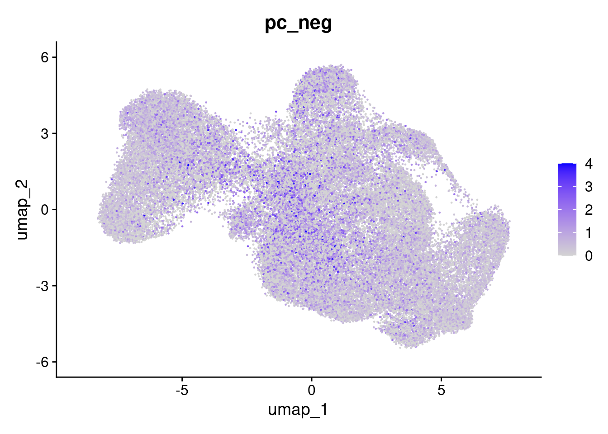

14 Analysis example
Link out directly??? https://swbioinf.github.io/spatialsnippets/e_spatiallyRestrictedGenes.html
##
## Attaching package: 'DT'## The following object is masked from 'package:Seurat':
##
## JS## The following object is masked from 'package:SeuratObject':
##
## JS
#so <- readRDS("data/GSE234713_CosMx_IBD_seurat_01_preprocessed_subsampled.RDS" )What genes have a irregular expression across the tissue? These might be localised to a particular region and indicate some spatial activity.
Considering a signle gene, we calculate ‘spatial autocorrelation’ with the MoransI test.
14.1 Run MoransI once
To run this quickly, going to arbitraily reduce the number of variable features to just 20.
For real line, would pick all VariableFeatures (or all genes).
so <- FindVariableFeatures(so, nfeatures=20)## Finding variable features for layer counts
the_sample <- 'CD_a'
the_fov <- 'GSM7473688.CD.a'
so_sample <- subset(so, tissue_sample == the_sample)## Warning: Not validating Seurat objects
## Not validating Seurat objects
## Not validating Seurat objects## Warning: Not validating FOV objects## Warning: Not validating Centroids objects
## Not validating Centroids objects## Warning: Not validating FOV objects## Warning: Not validating Centroids objects## Warning: Not validating FOV objects
## Not validating FOV objects
## Not validating FOV objects## Warning: Not validating Seurat objects
## Not validating Seurat objects
## Not validating Seurat objects
# If the Seurat method above crashes (segfault), a workaround is
# funning FindSpatiallyVariableFeatures at the assay level
so_sample_assay <- so_sample[['RNA']]
tc <- GetTissueCoordinates(so_sample)
rownames(tc)<- tc$cell
# When given an 'assay' FindSpatiallyVariableFeatures returns an assay. Put it back in the seurat object
so_sample[['RNA']] <- FindSpatiallyVariableFeatures(
so_sample_assay,
layer = "scale.data",
spatial.location = tc,
features = VariableFeatures(so_sample)[1:10], # Just a random few variable genes for testing!
selection.method = "moransi",
nfeatures=10 # mark top 10 spatially variable
)## Computing Moran's I## Warning in dist(x = pos): NAs introduced by coercion## Found more than one class "dist" in cache; using the first, from namespace 'spam'## Also defined by 'BiocGenerics'## Found more than one class "dist" in cache; using the first, from namespace 'spam'## Also defined by 'BiocGenerics'
#Put feature name as a column in the feature metadata
so_sample[["RNA"]]@meta.data$feature <-rownames(so_sample[["RNA"]])
gene_metadata <- so_sample[["RNA"]]@meta.data
gene_metadata_morans <-
filter(gene_metadata, !is.na(moransi.spatially.variable.rank)) %>%
select(feature,
MoransI_observed, MoransI_p.value, moransi.spatially.variable,moransi.spatially.variable.rank) %>%
arrange(moransi.spatially.variable.rank)
DT::datatable(gene_metadata_morans, width = '100%')
top_genes = gene_metadata_morans$feature[1:3]
top_genes## [1] "KRT20" "IGHM" "AQP8"
ImageDimPlot(so_sample,
molecules = top_genes,
group.by = 'tissue_sample', cols = c("grey30"), # Make all cells grey.
boundaries = "segmentation",
border.color = NA, axes = T, crop=TRUE)